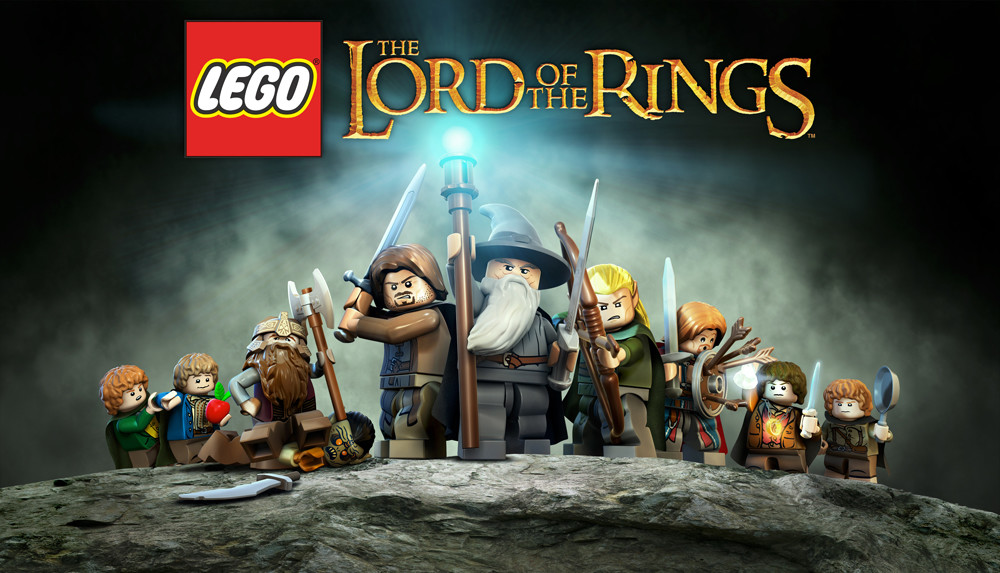

Lego El Señor de los Anillos es un videojuego basado en El Señor de los Anillos y en Lego desarrollado por Traveller's Tales para Nintendo 3DS, Nintendo DS, PlayStation Vita, Microsoft Windows, Wii, PlayStation 3, Xbox 360 y dispositivos iOS (iPad, iPhone y iPod touch). La versión de macOS, desarrollada por FeralInteractive, fue lanzada en febrero de 2013. Los fanes de Lego y de El Señor de los Anillos podrán disfrutar este gama de figuras basadas en la licencia de Tolkien, pero también de un nuevo videojuego desarrollado por Traveller's Tales La noticia parte de los primeros sets de personajes de Lego basados en El Señor de los Anillos que se han publicaciones especializadas en la juguetera, que incluyen el logo del estudio Los Ángeles. El juego estará basado en las tres películas de Peter Jackson lanzadas hasta la fecha.
regalame un play christian
El videojuego sigue la misma sinopsis que la trilogía de películas. El videojuego narra el viaje del protagonista principal, Frodo Bolsón un hobbit, para destruir el Anillo Único y la consiguiente guerra que provocará el enemigo para recuperarlo, ya que es la principal fuente de poder de su creador, el Señor oscuro Sauron.
